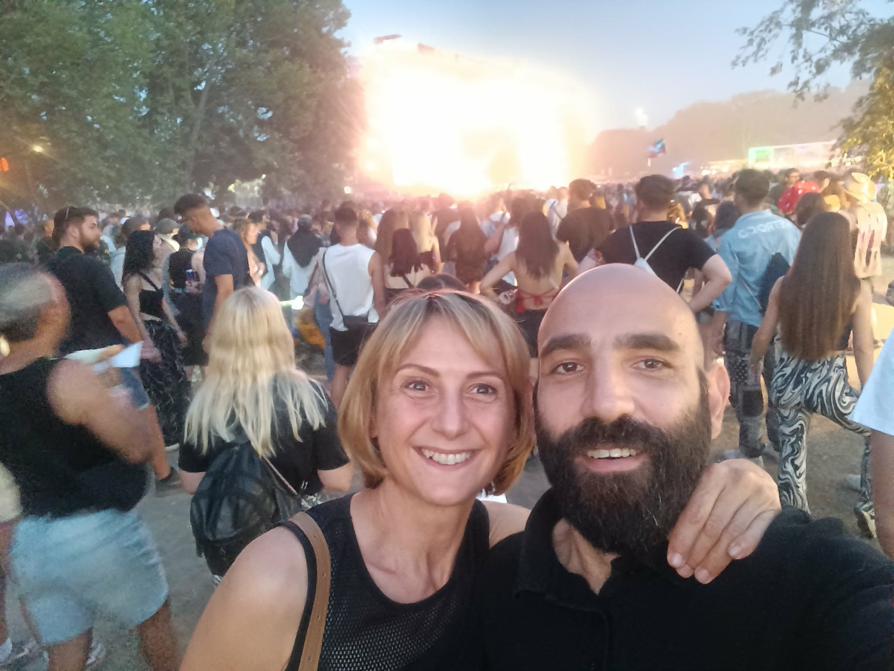

DONATE & HELP OUR CATS
Even a small contribution can make a big difference
Your donation helps provide food, and other essential & veterinary care for stray and feral cats.
Revolut: +356 7925 3603
BOV Pay: +356 7925 3603
Revolut: +356 7925 3603
BOV Pay: +356 7925 3603

BCRS BOTTLES
Donate your eligible BCRS bottles and cans. The proceeds help us provide food and care.
Please get in touch so we can arrange pick-up.

CAT FOOD
You can also support our colonies by donating cat food (dry & wet).
Please get in touch so we can arrange pick-up.

Who Are We?
Two hoomans, a lot of cats, and not quite enough free time.

Ibi & Sandro
The two hoomans who somehow ended up working for the cats.
So, who is behind Dingli Stray Cats?
Mainly, it is the two of us — Ibi and Sandro.
What started with simply wanting to help a few stray cats gradually became feeding, arranging neutering, helping cats in need and trying to make sure that the colonies we look after are cared for as well as possible.
We are not a big organisation or a large team. Most of the day-to-day coordination is handled by the two of us, usually while trying to keep up with what the cats have decided they need from us that day.